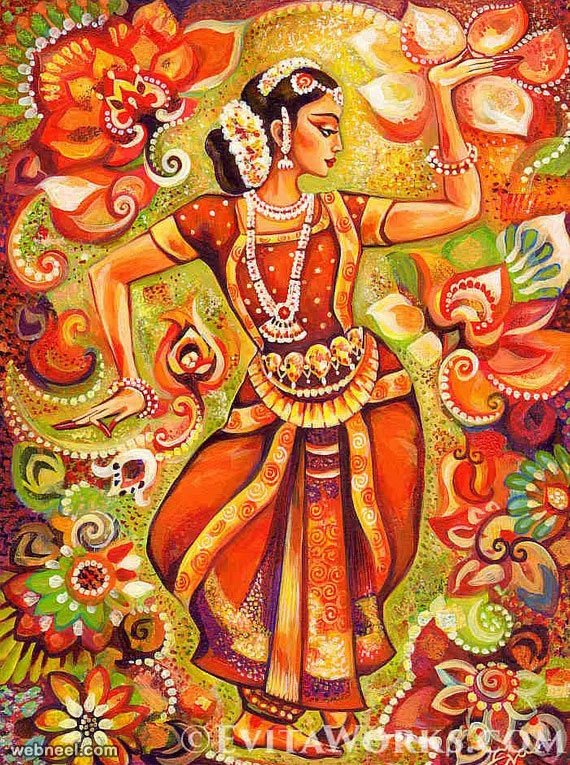

Cultural Significance of Colors in India and Ancient Times

India has a rich and diverse history where colors hold deep symbolic meanings, influencing traditions, spirituality, clothing, and rituals. Since ancient times, colors have been an integral part of Indian culture, with their significance rooted in religion, mythology, and daily life. Many of these associations continue to thrive today, reflecting India's vibrant heritage.
Red – Auspiciousness, Power, and Marriage
Red has been one of the most important colors in Indian culture for thousands of years. It symbolizes auspiciousness, power, and fertility. In Hinduism, red is associated with Goddess Durga, who represents strength and protection. It is also the color of sindoor (vermilion), worn by married women as a sign of marital status and prosperity. In weddings, brides traditionally wear red sarees or lehengas, as it is believed to bring good fortune and happiness. Ancient Indian scriptures and murals often depict red as a color of passion, energy, and transformation.
Yellow – Knowledge, Learning, and Prosperity
Yellow is the color of knowledge, learning, and wisdom in Indian tradition. It is closely linked to Goddess Saraswati, the deity of wisdom, music, and arts. Many students and devotees wear yellow on Vasant Panchami, a festival dedicated to learning. Yellow also signifies prosperity and is associated with Lord Vishnu, who is often depicted wearing yellow garments. In ancient times, turmeric, a sacred yellow spice, was widely used in rituals, medicine, and food, symbolizing purification and health.
Blue – Divinity, Strength, and Infinity
Blue is regarded as the color of divinity and cosmic power in Indian culture. Lord Krishna and Lord Shiva, two of the most revered deities, are depicted with blue skin, symbolizing their boundless energy and transcendental nature. The color represents stability, strength, and infinite potential. Ancient Indian art and temple carvings often feature blue to depict the vastness of the sky and ocean, signifying eternal truth and wisdom.
Green – Life, Fertility, and Nature
Green has always symbolized life, renewal, and harmony in Indian traditions. It is closely associated with nature and the agricultural cycles that sustain life. Green also represents peace and prosperity, often linked to Lord Ganesha, who is believed to remove obstacles and bring success. In ancient India, green was used in natural dyes made from plants and minerals for clothing and artwork. Even today, green is an essential color in festivals like Eid and is seen in many traditional outfits.
White – Purity, Peace, and Mourning
White is a color of purity, peace, and spirituality in Indian culture. It is often worn by sages and ascetics who renounce worldly life in pursuit of enlightenment. In ancient India, white was associated with satvik (pure) energy, and it was commonly used in religious ceremonies. Unlike in Western cultures where white symbolizes weddings, in India, it is traditionally worn at funerals as a sign of mourning and detachment from the material world. White is also linked to Goddess Saraswati, who represents wisdom and purity.
Black – Protection, Mystery, and Fear
While black is often seen as inauspicious in certain Indian traditions, it also holds protective qualities. Many people wear black threads or kohl to ward off the "evil eye" (nazar dosh). In ancient times, black was associated with the unknown and was sometimes feared, yet it was also seen as a symbol of power and resilience. Lord Shani (Saturn), the deity of karma and justice, is represented with black, as he is believed to bring challenges that ultimately lead to spiritual growth.